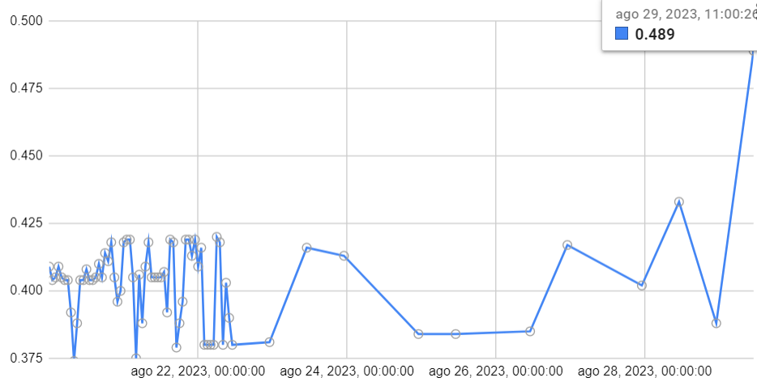

10.- Bugs reportados
10.1.- Estado de los bugs
Nombre |
Estado |
|---|---|
Espaciado en el envío |
— |
10.2.- Espaciado en el envío
Id: 001
Informador:
Producto: BIOT-003-E620
Empresa: Ledesma
Versión de firmware:
Versión de app:
Alcance: Crítico
Estado: Por revisar
Descripión detallada
El equipo está configurado en modo12. Venía subiendo todos los datos correctamente hasta el 22 de agosto a la 11:00; luego empezo a subir 1 dato cada 12 horas y el 24 de agosto empezó a subir 1 dato cada 24 hs.
Posibles causas
Solución propuesta
10.3.- Espaciado en el envío
Id: 001
Informador:
Producto: BIOT-003-E620
Empresa: Ledesma
Versión de firmware:
Versión de app:
Alcance: Crítico
Estado: Por revisar
Descripión detallada
Tambien detectan muchas anomalias en las mediciones, datos muy varibles lo cual preocupa ya que si esas variaciones se dan en los aforadores estamos hablando de datos muy incorrecto con errores de hasta 2cm en la mediciones